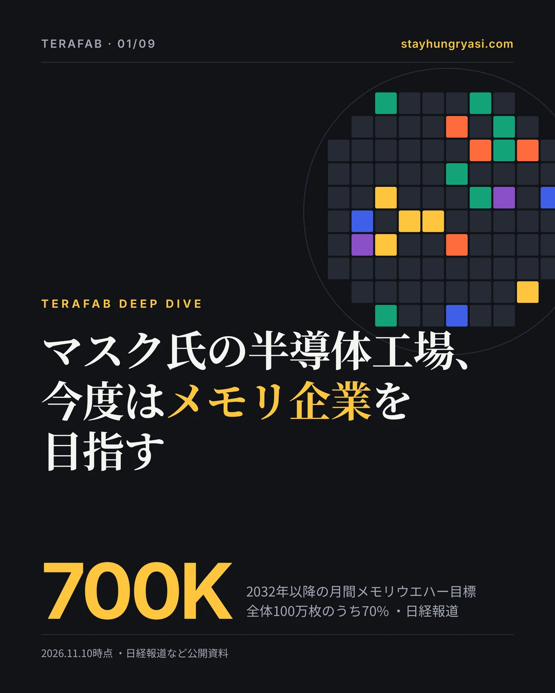
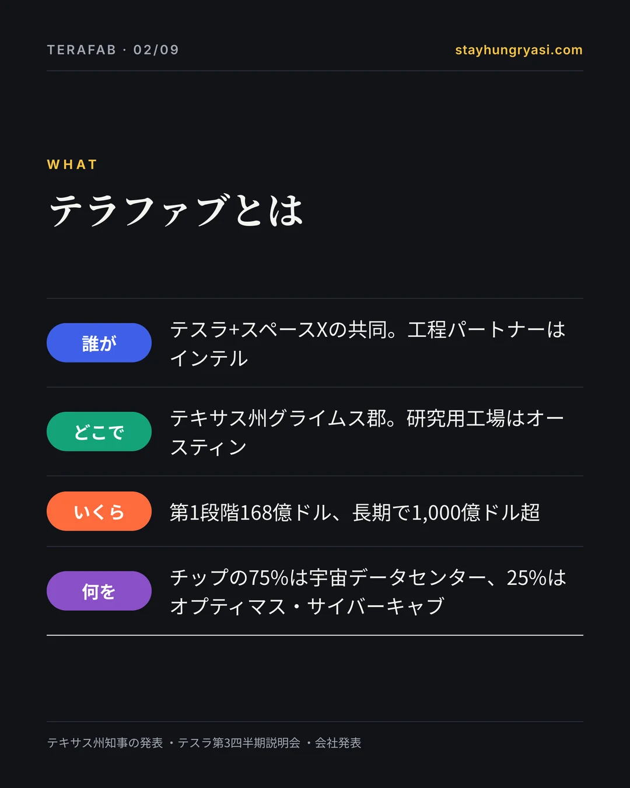
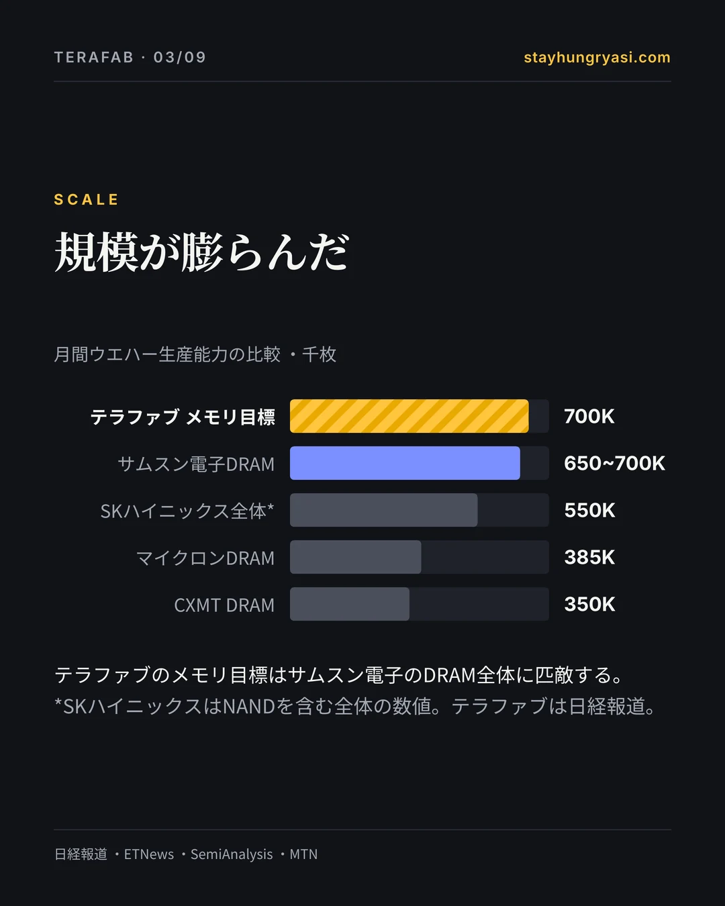
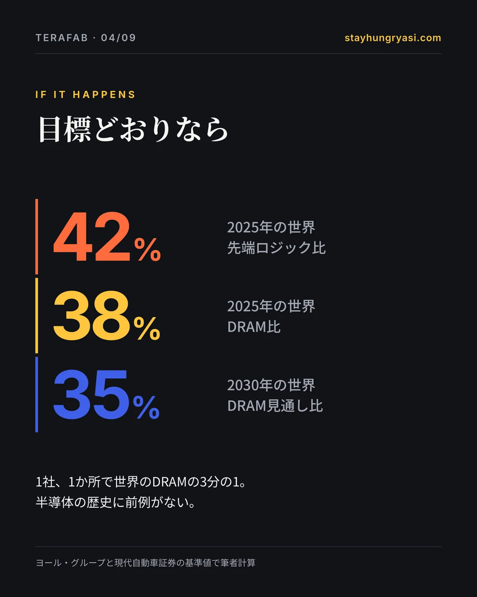
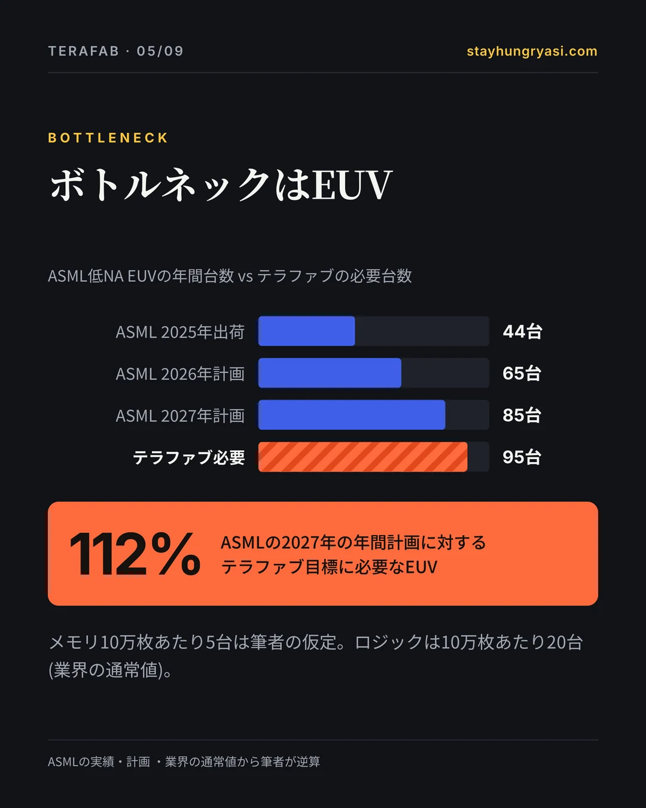
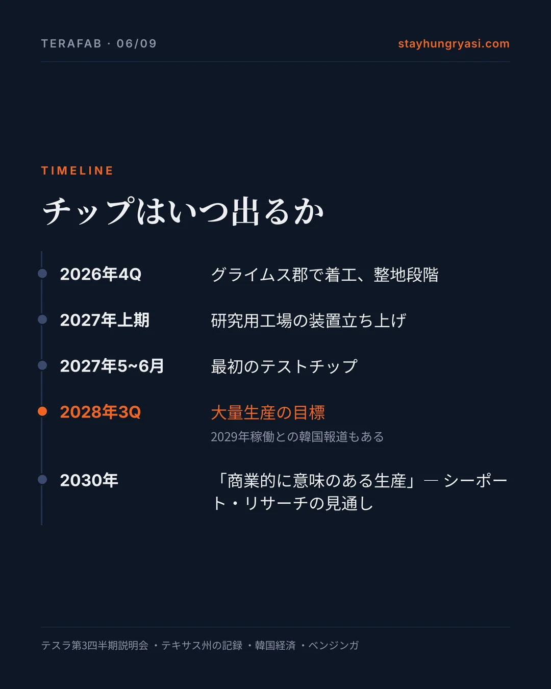
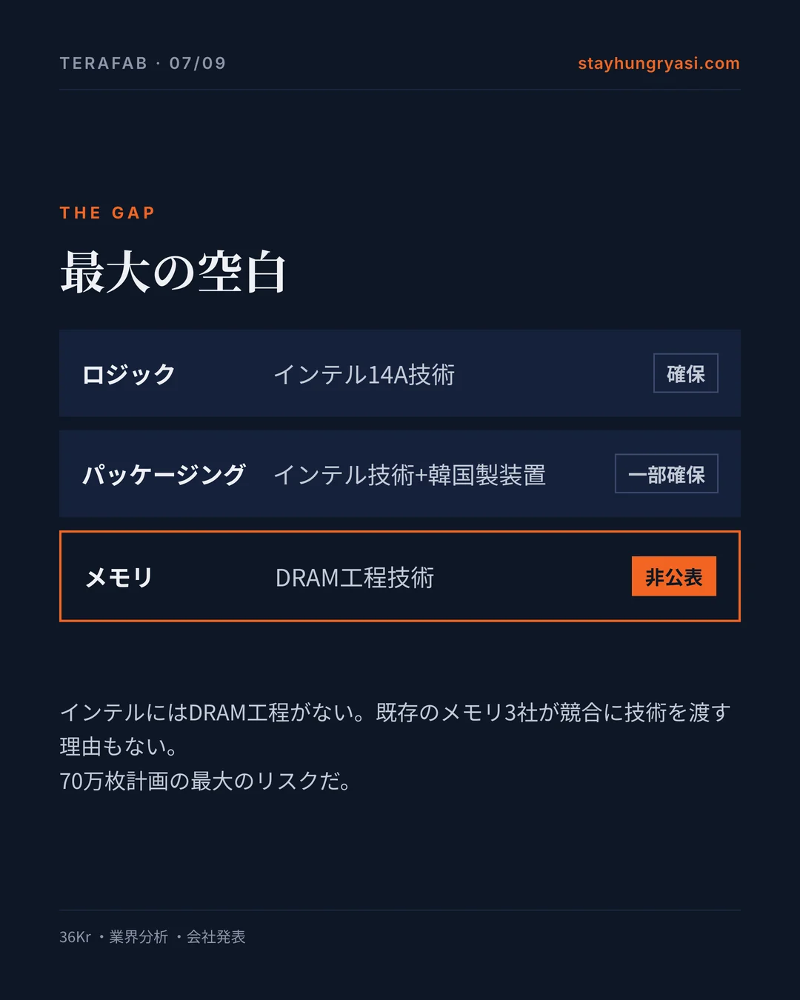
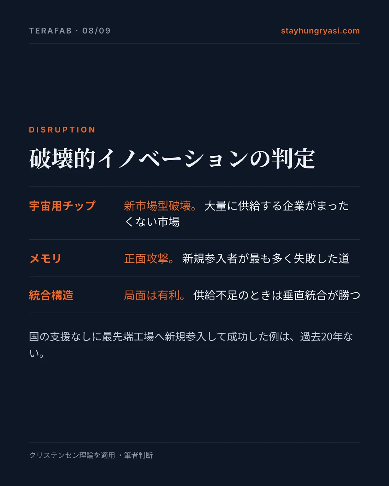
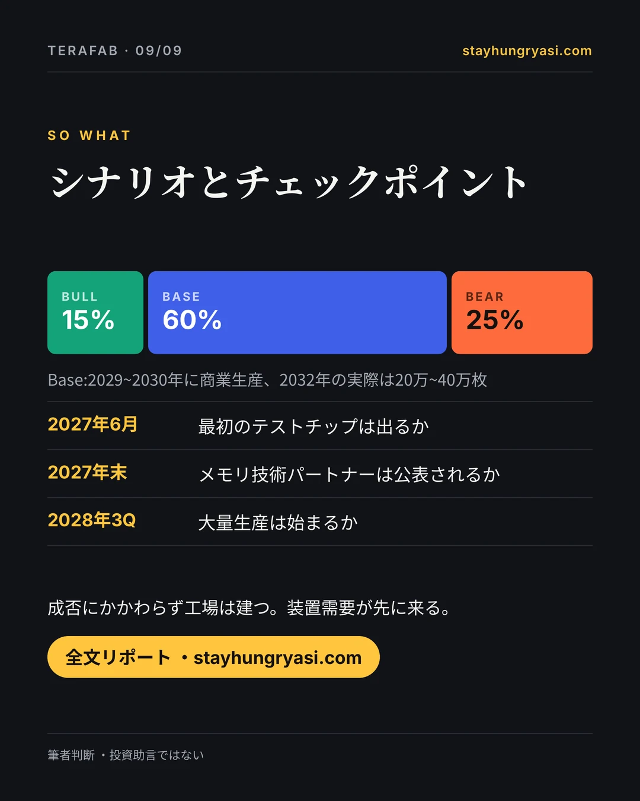

データ基準 2026年11月10日(韓国時間)· stayhungryasi.com
表記ルール:[事実]確定した事実 ・[会社]会社の主張 ・[報道]報道・市場推計 ・[判断]筆者の判断。シナリオ確率は筆者の主観的な判断である。前回分析の主張33件を原典と照合し直して判定した。
告知:このリサーチはAI(Claude)を使って作成した。投資助言ではない。
カードニュース9枚で見る
要点を9枚にまとめた。画像をクリックすると拡大できる。


















要約
テラファブはテスラとスペースXがテキサスに建てる半導体工場だ。11月9日の日経報道で、目標は2032年以降に月100万枚、うち70万枚がメモリへと膨らんだ。サムスン電子のDRAM全体に匹敵する規模だ。装置発注という実際のお金は動き始めた。しかし、メモリ技術をどこから得るのか、歩留まり、両社の費用分担はまだ何ひとつ決まっていない。
| 項目 | 内容 | 根拠 |
|---|---|---|
| 第1段階の投資 | 168億ドル ・テキサス州グライムス郡 | [事実] テキサス州知事の発表 |
| 長期投資 | 1,000億ドル超 ・費用分担は未定 | [会社] テスラ第3四半期説明会 |
| 最終生産能力 | 月100万枚(メモリ70万枚 ・ロジック30万枚以上) | [報道] 日経 |
| 最初のテストチップ | 2027年5~6月 | [会社] テスラ第3四半期説明会 |
| 大量生産 | 2028年第3四半期目標 ・2029年稼働との報道もある | [会社] / [報道] 韓国経済 |
| チップの用途 | 宇宙データセンター75% ・オプティマス・サイバーキャブ25% | [事実] 会社発表 |
| 工程パートナー | インテル14A ・TSMCと協議中(未合意) | [事実] 会社・報道 |
ひと言の判断 [判断] — 工場は建つ。しかし「メモリ70万枚」を支える技術の出所が空白である限り、テラファブはまだ計画書だ。
1. この30日で何が変わったか
| 日付 | 内容 | 根拠 |
|---|---|---|
| 2026-10-20 | スペースX第3四半期決算説明会:メイン拠点の大量生産目標は2028年第3~第4四半期 | 会社 |
| 2026-10-20 | スペースXの第3四半期は売上高146億ドル、純利益44億ドル、四半期設備投資196億ドル | 事実 |
| 2026-10-21 | テスラ第3四半期決算説明会:2027年上期に装置立ち上げ、5~6月に最初のテストチップ、2028年第3四半期に大量生産 | 会社 |
| 2026-10-21 | テスラ説明会:2028年初めまで装置に数百億ドル、長期で1,000億ドル超、テスラとスペースXの費用分担は未定 | 会社 |
| 2026-10 | TSMCは運営権があれば参加、マスク氏はクリーンルームの一部賃貸のみ容認 — 合意なし | 事実 |
| 2026-11-06 | マスク氏、チップ開発期間を1年から1か月に縮める目標を再強調 | 会社 |
| 2026-11-09 | 日経:2032年以降に月100万枚(メモリ約70万枚、ロジック30万枚以上) | 報道 |
| 2026-11-09 | 日経:購買担当者が訪日し装置を緊急発注(一部は数か月以内の納期、企業名は非公表) | 報道 |
| 2026-11-09 | 報道後、ASMLなど半導体装置株が反発 | 事実 |
2. 当初発表と現在
日程とパートナーは後退し、生産量の目標は拡大した。マスク氏のプロジェクトでよく見るパターンだが、今回は装置発注が伴っている点が違う。[判断]
| 項目 | 当初発表 | 現在 | シグナル |
|---|---|---|---|
| 投資規模 | 200億~250億ドル(3月) | 第1段階168億ドル/地元申請550億~1,190億ドル/長期1,000億ドル超 | まちまち |
| 立地 | オースティンのテスラ本社近く | オースティン=研究用工場、グライムス郡=大量生産 | 中立 |
| ロジック工程 | 2ナノ | インテル18Aで出発 → 14Aに変更 | 後退 |
| パートナー | 自社構築 | インテル+TSMCと協議(未合意) | 後退 |
| 生産日程 | 2027年初期生産、2028年量産 | 2027年半ばにテストチップ、2028年第3四半期に量産(韓国経済は2029年稼働と報道) | 後退 |
| 生産量 | 当初月10万枚 → 最終100万枚 | 2032年以降に月100万枚、うち70%がメモリ | 拡大 |
| 用途配分 | テスラ20%/宇宙用チップ80%(4月) | テスラ25%/宇宙データセンター75%(8月) | 中立 |
| 法的拘束力 | なし | IPO届出書では「一般的な枠組み」、財務・知財・参加義務は今後の合意事項 | 後退 |
| 雇用 | 非公表 | 第1段階3,000人超(州知事)vs 4段階完了後の正社員1,500~1,800人(地域協議会推計) | 食い違い |
3. 数字で検証する
a) 生産能力 — 月間ウエハー、千枚
テラファブは日経報道。サムスンのDRAMは65万~70万枚推計の中間値(2025年11月)、SKハイニックスはNANDを含む全体の数値なのでメモリ目標と直接比べてはいけない。TSMC・ラピダスは報じられた比率から逆算した。
| 比較 | 比率 [判断・計算] |
|---|---|
| ロジック30万枚 ÷ 2025年の世界の10ナノ未満ロジック(ヨール・グループ) | 42.4% |
| メモリ70万枚 ÷ 2025年の世界DRAM(ヨール・グループ) | 37.8% |
| メモリ70万枚 ÷ 2030年の世界DRAM見通し(現代自動車証券) | 35.0% |
目標どおりなら、1社が1か所で世界のDRAMの3分の1をつくることになる。半導体の歴史に前例はない。ただし70万枚がDRAMだけなのか、NANDやHBMが混じるのかは公表されていない。[判断]
b) ボトルネック装置 — EUV露光装置
ASMLは実績と会社計画(2028年は検討中の30%追加増産から計算)。テラファブの必要台数はロジック10万枚あたり20台(業界の通常値)、メモリ10万枚あたり5台(筆者の仮定)で逆算した。
テラファブの目標全体にはEUVが約95台必要だ。ASMLの2027年の年間生産計画の112%で、ロジックだけでも71%になる。ASMLはすでに2027~28年の生産能力が顧客需要に届かないと明らかにしている。テラファブはサムスン・SKハイニックス・TSMCと同じ列に並ばなければならない。[判断]
c) 資本 — 10億ドル、対数軸
対数軸なので、実際の金額差は棒の長さの差よりはるかに大きい。バーンスタインの推計(1TW全体の実現)は第1段階の約300倍だ。
資金事情は3月より確かに良くなった。スペースXは第3四半期に純利益44億ドルで黒字転換し、現金と有価証券は約900億ドルある。しかし第4四半期だけで350億~400億ドルを設備に使うとしており、大半はデータセンター向けだ。テラファブに実際にいくら投じたかは公表されていない。[事実]
d) 人材
| 項目 | 数字 | 出典 | 等級 |
|---|---|---|---|
| 第1段階の正社員 | 3,000人超 | テキサス州知事室 | 会社 |
| 建設作業員(常時) | 4,000~5,000人 | ブラゾス経済協議会の推計 | 市場 |
| 4段階完了後の正社員 | 1,500~1,800人 | ブラゾス経済協議会の推計 | 食い違い |
| 求人掲載の増加 | 2025年平均比で約50% | アクセサリー業者のブログ(二次情報) | 未検証 |
| 月100万枚体制に必要な人員 | 数万人規模 | 筆者判断(定量的根拠なし) | 判断 |
州知事の3,000人と地域協議会の1,500~1,800人は合わない。どちらにせよ月100万枚体制にはまったく足りない。装置より人がより大きなボトルネックになる可能性が高い。[判断]
e) 歩留まり — 公表された数字なし
テラファブは歩留まりを公表したことがない。アナリストは新規参入者にロジック80%、HBM70%を想定する。下は筆者の推定範囲だ。[判断]
| 年 | 推定範囲 | 説明 |
|---|---|---|
| 2027 | — | テストチップ段階で、歩留まりの概念はほぼ当てはまらない |
| 2028 | 20~40% | 量産開始、まだ競争力のない水準 |
| 2029 | 40~65% | 学習曲線の段階 |
| 2030 | 60~80% | ゴールドバーグ氏の言う「商業的に意味のある生産」の時期 |
| 2031 | 75~85% | 新規参入者の想定値に届く可能性 |
4. 最大の空白、技術の出所
ロジックにはインテル14Aという技術の出所がある。インテル出身で17年の経歴を持つゲーリー・チャン氏を14A移植の責任者に迎えたとの報道もある。しかし月70万枚のメモリを支えるDRAM工程技術は、出所が一度も公表されていない。インテルにはDRAM工程がなく、既存のメモリ3社が競合に中核技術を渡す理由もない。この空白がテラファブ最大のリスクだ。[判断]
| 製品群 | 技術の出所 | 公表状況 | リスク |
|---|---|---|---|
| ロジック | インテル14Aのライセンス(IBM–AMD型の技術移転構造が取り沙汰される) | 一部公表 | 中 |
| メモリ(DRAM・HBM) | 非公表 | 非公表 | 最上 |
| 先端パッケージング | インテルのEMIB・Foveros(報道)+韓国製装置 | 一部公表 | 中 |
| 宇宙用耐放射線チップ(D3) | スペースXの自社設計 | 製造工程は非公表 | 高 |
| マスク・テスト | 研究用工場内での自社製作構想 | 会社の主張 | 中 |
5. 破壊的イノベーションの診断
| 製品群 | クリステンセンの類型 | 根拠 |
|---|---|---|
| 宇宙用耐放射線チップ | 新市場型破壊 | 宇宙級のAI演算を大量に供給する企業はない。既存企業が無視する足がかりにあたる。 |
| エッジ推論チップ | 持続的 ・内製化 | オプティマス・サイバーキャブ向け。市場はすでにある。破壊よりも供給の安定と反復速度が目的だ。 |
| メモリ70万枚 | 持続的な正面攻撃 | 同じ製品でサムスン・SKハイニックス・マイクロンと同じ市場で戦う。新規参入者が最も多く失敗した道だ。 |
| 統合構造全体 | 統合が有利な局面 | AI演算とメモリは供給不足の局面にある。性能が足りないうちは垂直統合企業が勝つという、クリステンセンのモジュール化・統合理論に合致する。 |
バリューチェーン。ロジック・メモリ・パッケージング・テスト・マスクを一つ屋根の下に置く。ファブレス–ファウンドリ–メモリ–後工程に分かれた30年の分業構造を、最大の需要家が自ら巻き戻そうとする試みだ。
速度・需要。チップ開発期間を1年から1か月に縮める目標、外部顧客の営業が要らないキャプティブ需要、ウエハーではなく「テラワット」で需要を数える方式が、これまでの新規参入者と違う点だ。ただし1か月サイクルにはまだ根拠がない。[判断]
6. ベースレート — 先行者の成績
| 参入者 | 国の支援 | 結果 | 期間 | 評価 |
|---|---|---|---|---|
| ラピダス(日本、2ナノ) | あり | 補助金2兆3,540億円、2026年末に試作、2027年量産予定 | 2022年設立 → 約5年 | 進行中 |
| CXMT(中国DRAM) | あり | シェアは2020年の1%から7~8%へ、月35万枚(2026年末推計) | 約10年 | 部分的成功 |
| 中国の先端ロジック | あり | TSMCの技術者を数千人採用しても差は縮まらず | 10年以上 | 未達 |
| インテル18A(既存の強者) | 一部 | 50年の業歴でも新工程の歩留まり問題 | 進行中 | 進行中 |
| テスラ4680電池(マスク氏) | なし | 計画比で期待外れとの評価(個人ブログの意見、根拠は弱い) | 2020~ | 未達 |
| スペースXの再使用ロケット(マスク氏) | なし | 業界の懐疑論を覆して商用化 | 約13年 | 成功 |
過去20年、国の支援なしに最先端ロジックやDRAMに新規参入して成功した企業はない。国が後押ししたCXMTでさえ10年かけてシェアは1桁だ。テラファブが違うのはキャプティブ需要と資金力の2点だけだ。[判断]
7. ベアケース
| 深刻度 | リスク | 内容 |
|---|---|---|
| 最上 | メモリ技術の出所が空白 | 月70万枚のメモリを支える工程技術の出所は一度も公表されていない |
| 高 | 技術・歩留まり | 2ナノ以下のGAA構造では小さなばらつきでも歩留まりが急落する。歩留まりの数値は非公表 |
| 高 | 日程 | 最初の少量の装置到着は2028年以前は難しいと装置受注先が伝える(ゴールドバーグ氏) |
| 高 | 資本 | 長期1,000億ドル超 vs バーンスタインの5兆ドル、分担は未定、データセンター投資と競合 |
| 高 | 人材 | 第1段階3,000人、正社員推計の食い違い、韓国・台湾との人材争奪 |
| 中 | ガバナンス | テスラもインテルも残留義務なし(IPO届出書) |
| 中 | パートナー間の衝突 | 同じ敷地にインテル14AとTSMCのラインが並ぶなら知財の分離が必要 |
| 中 | 地元の反発 | 住民約900人が監視強化を請願、35年間の固定資産税減免を承認 |
8. シナリオ
| シナリオ | 10月 | 11月 | 姿 |
|---|---|---|---|
| Bull | 15% | 15% | 2028年量産、2030年にロジック歩留まりが競争力に、2032年に50万枚以上、エヌビディアGPUの一部を代替 |
| Base | 55% | 60% | 2027年に研究用工場が稼働、商業生産は2029~2030年、2032年の実際は20万~40万枚、パートナー頼み |
| Bear | 30% | 25% | 2年以上の遅延、規模縮小、事実上の外部長期供給契約に転換 |
装置発注が実際に始まり、スペースXが黒字に転じたためBearを下げた。メモリへの拡大で難度が上がったためBullは据え置いた。重要なのは、Baseでも2027~2030年に装置需要が実際に生まれることだ。目標の20~40%の達成でも、月20万~40万枚規模の新しい装置が必要になる。[判断]
9. バリューチェーンの構造
以下は影響の構造を整理したもので、特定銘柄の売買を勧めるものではない。根拠が「期待のみ」や「筆者判断」のところは確認された受注がない。
| 分類 | 企業 | 国 | 根拠 | 内容 |
|---|---|---|---|---|
| シナリオを問わず恩恵 | ASML | オランダ | 需要反映の報道 | テラファブ需要を2027~28年の増産計画に反映(ロイター) |
| シナリオを問わず恩恵 | アプライド マテリアルズ | 米国 | 発注の報道 | 第2四半期に前工程装置の発注報道 |
| シナリオを問わず恩恵 | ラムリサーチ | 米国 | 発注の報道 | 第2四半期に前工程装置の発注報道 |
| シナリオを問わず恩恵 | 東京エレクトロン | 日本 | 発注の報道 | 第2四半期の発注報道、11月に日本で緊急発注(企業名は非公表) |
| 条件付きの恩恵 | ハンミ半導体 | 韓国 | 報道が食い違い | 韓国経済(9月14日)はパッケージング装置の購買注文を、アジア経済(10月2日)は発注未確定(協議段階)を報道。6月にスペースX株500億ウォンを取得 |
| シナリオを問わず恩恵 | HPSP | 韓国 | 受注の報道 | 高圧水素アニール(HPA)のテスト装置をオースティンの研究用工場へ2027年上期に納入と報道(アジア経済、10月2日) |
| 条件付きの恩恵 | インテル | 米国 | 契約公表 | 14Aの実績になる。ライセンス方式ならインテル工場の売上ではない |
| 条件付きの恩恵 | TSMC | 台湾 | 交渉中 | 運営権を得れば恩恵、クリーンルーム賃貸なら限定的 |
| 条件付きの恩恵 | マイクロン | 米国 | 期待のみ | DRAM技術パートナー候補(筆者判断)。「数量確保」発言は未検証 |
| 条件付きの恩恵 | ウォニクIPS・ジュソンエンジニアリング・PSK | 韓国 | 期待のみ | メモリ70万枚が現実になれば。受注報道なし |
| 条件付きの恩恵 | ソウルブレイン・東進セミケム | 韓国 | 期待のみ | 素材。受注報道なし |
| 短期は恩恵・長期はリスク | サムスン電子 | 韓国 | 契約確認 | AI5をテキサスで試作、AI6は165億ドルの契約。長期的にはDRAMの競合が出現 |
| 短期は恩恵・長期はリスク | SKハイニックス | 韓国 | 筆者判断 | 2030年までは外部HBM需要。Bullなら2032年以降に大口顧客を失う |
| 打撃(Bullの場合のみ) | エヌビディア | 米国 | 筆者判断 | 宇宙データセンター向けGPUの一部を自社チップで代替 |
| 打撃(Bullの場合のみ) | シムテック・テドク電子 | 韓国 | 筆者判断 | 米国内の後工程が自立すれば基板・パッケージングに脅威(2025年11月の分析) |
10. 今後24か月、何を見るか
| 時期 | チェックポイント | こうなれば警告 |
|---|---|---|
| 2026年第4四半期 | グライムス郡の整地から本工事への移行(10月着工) | 2027年上期までに本工事に入らない |
| 2027年1月 | テスラ第4四半期説明会:費用分担の合意 | 2027年半ばまで拘束力のある契約なし |
| 2027年上期 | 研究用工場の装置立ち上げ、EUV搬入 | 立ち上げが下期にずれ込む |
| 2027年5~6月 | 最初のテストチップ | 2027年第4四半期以降に遅延 |
| 2027年中 | DRAM技術パートナーの公表 | 2027年末まで非公表 → 70万枚計画は信頼できない |
| 2027年中 | TSMCとの交渉結果 | TSMCが運営権を得れば「自前の工場」の論理が弱まる |
| 2027年 | インテル14Aのリスク生産・外部顧客 | 14Aの日程遅延 |
| 毎四半期 | テラファブ投資額が別途開示されるか | データセンター優先でテラファブ投資を縮小 |
| 毎四半期 | ASML・TEL・AMATの決算説明会での言及 | 装置メーカーが見通しからテラファブ需要を外す |
| 2028年第3四半期 | 大量生産の開始 | 2029年以降へ公式に延期 |
11. 3文の要約
- テラファブは、マスク氏がテスラ・スペースX向けのAIチップとメモリを自らつくるためにテキサスに建てる、史上最大規模の半導体工場だ。
- まだチップは一つも出ておらず、最初の試作チップは2027年半ば、本格生産は2028年下期が目標だ。メモリ技術の確保と不良率が最大の関門だ。
- 成否にかかわらず工場は建設中で、装置需要が先に来る。既存のメモリ企業には当面は需要に、2030年以降は競争の変数になる。
検証ノート
前回分析の主張33件を原典と照合し直した。確認19件、一部修正8件、報道のみ2件、未検証2件、格下げ2件だ。未検証・格下げの項目は本文の結論の根拠から外した。以下は確認以外の項目だ。
| 前回分析の主張 | 判定 | 検証結果 |
|---|---|---|
| サムスン電子DRAMは月65万~70万枚 | 一部修正 | 数値は出典と一致。ただし2025年11月の推計で、その後の増設分は反映されていない |
| SKハイニックスは月約55万枚 | 一部修正 | DRAM+NANDを合わせた全体の生産能力。テラファブのメモリと1対1で比べるのは不適切 |
| ロジック30万枚=2025年の世界先端ロジックの42% | 一部修正 | 計算は正確。分母が2025年なので2032年の市場に対する比率はもっと低い |
| メモリ70万枚=2025年の世界DRAMの38% | 一部修正 | 2030年見通しの月200万枚を基準にすると35%。70万枚がDRAMだけかは未確定 |
| 建設作業員4,000~5,000人、4段階で9~10年 | 一部修正 | 同じ出典が4段階完了後の正社員を1,500~1,800人と推計しており、州知事の3,000人と食い違う。前回分析で漏れていた |
| 求人掲載が2025年平均比で約50%増 | 未検証 | テスラ用アクセサリー業者のブログ(二次情報)。一次資料なし |
| グライムス郡で12月1日に着工 | 一部修正 | 10月初めに税優遇契約とともに着工し、10月中旬までは整地段階(10月24日のハブ・リサーチ)。12月1日の本工事の日付は二次情報 |
| ハンミ半導体がテラファブのパッケージング装置を受注 | 一部修正 | 韓国経済(9月14日)は購買注文を、アジア経済(10月2日)は発注未確定を報じ、報道が食い違う。韓国で納入が報じられたのはHPSP。ハンミは6月にスペースX株500億ウォンを取得しており利害関係がある |
| 2032年以降に月100万枚(メモリ70万枚) | 報道のみ | 多くのメディアが日経を引用。会社の公式発表ではない |
| 日本の装置メーカーへの緊急発注 | 報道のみ | 企業名・金額は非公表 |
| 2028年第3四半期に大量生産 | 一部修正 | 会社の主張とは一致。9月14日の韓国経済の報道は2029年稼働を目標としている |
| ウエハーコストはTSMCより30~50%高い | 格下げ | AIニュース集約サイトで、元の分析を確認できない。根拠には使わない |
| テスラ4680の失敗例 | 格下げ | 個人ブログの意見。事例としては残すが根拠は弱いと明記 |
| マイクロンの「テスラ向け数量確保」発言 | 未検証 | 二次情報。元の書き起こしは未確認 |
以前のリサーチとの関係
装置ごとの恩恵構造と段階別の装置投資推計は、10月24日のリサーチテラファブ装置マップに詳しい。今回はその後に出た日経のメモリ70万枚報道と第3四半期決算説明会を反映し、ハンミ半導体の発注は当時と同じく「報道の食い違い」とみる。
出典
- Seeking Alpha — Nikkei: 1M wafers a month by 2032
- MarketScale — rush orders to Japanese toolmakers
- ThinkComputers — 700K memory wafers a month
- Not a Tesla App — Tesla Q3 2026 call recap
- EVwire — Tesla Q3 2026 call transcript
- Pulse 2.0 — SpaceX Q3 results
- TechCrunch — SpaceX Q4 capex guidance
- Tom's Hardware — TSMC's condition to run the fab
- eeNews Europe — Intel 14A deal stands
- Futurum — Intel partnership and allocation
- Fox 7 Austin — Texas governor: $16.8B, 3,000 jobs
- KBTX — the real numbers behind the job promises
- Manufacturing Dive — first phase and tax abatement
- eeNews Europe — ASML: 65 EUV in 2026, +30% in 2027
- eeNews Europe — ASML: 2027–28 supply short of demand
- Crypto Briefing — ASML shipped 44 EUV in 2025
- TrendForce — Samsung DRAM 650–700K wafers
- Xenospectrum — Micron 385K, CXMT 350K (SemiAnalysis)
- MTN — SK hynix 550K wafers
- SemiWiki — DRAM about 2M wafers a month by 2030
- Yole Group — global wafer capacity
- Yahoo Finance — about 20 EUV per 100K wafers
- Benzinga — Goldberg interview
- 36Kr — where the memory IP comes from
- Jon Peddie Research — Gary Jiang hire, local pushback
- TrendForce — Hanmi Semiconductor order report
- Asia Economy — HPSP delivery, Hanmi unconfirmed
- Tom's Hardware — yield assumptions
- inews24 — CXMT market share
- Hankyung — Rapidus subsidy
- 3DTested — Bernstein: about $5 trillion
本資料は公開された報道・開示に基づく情報提供目的の分析であり、特定銘柄の売買を勧めるものではない。数値は2026年11月10日時点で、その後変わる可能性がある。投資判断とその責任は投資家本人にある。stayhungryasi.com